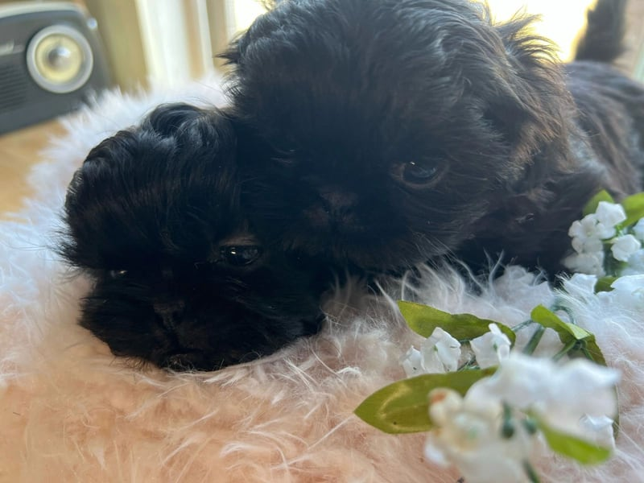
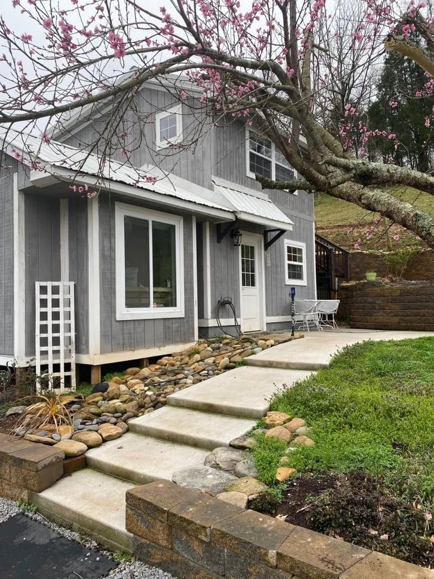
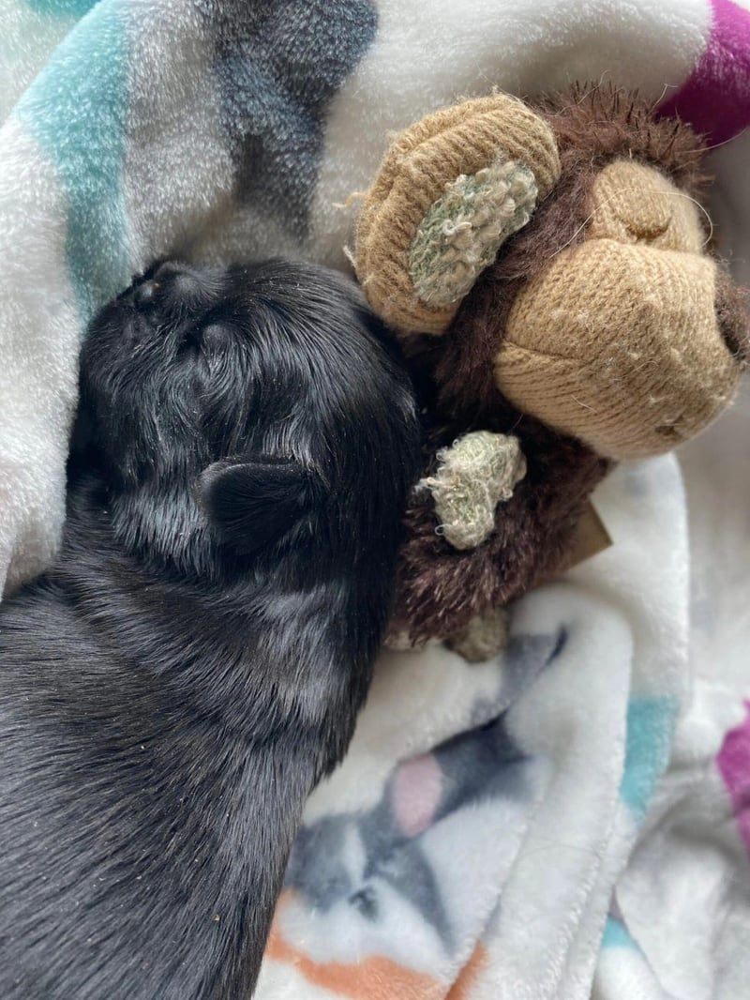
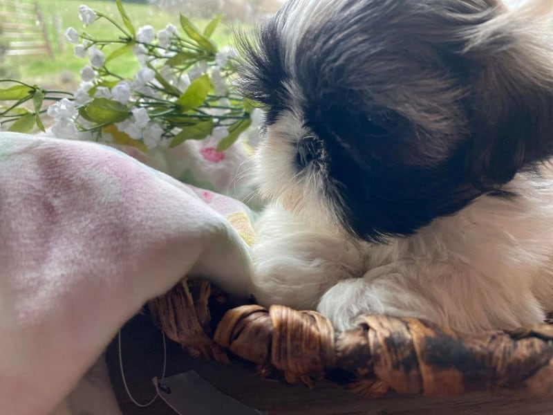
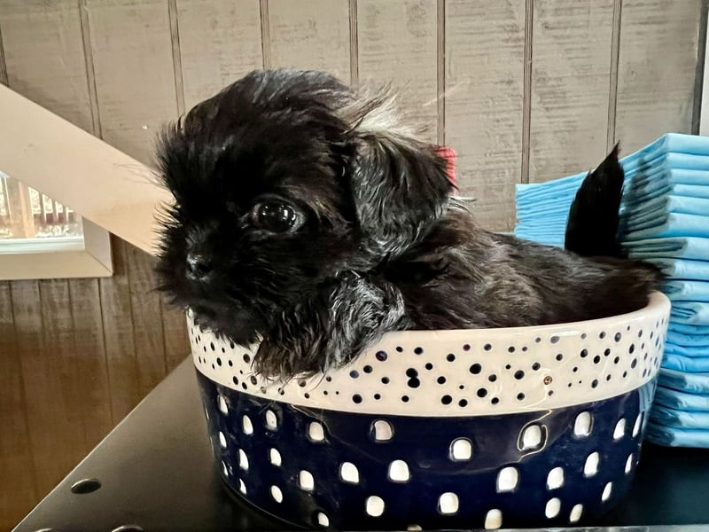
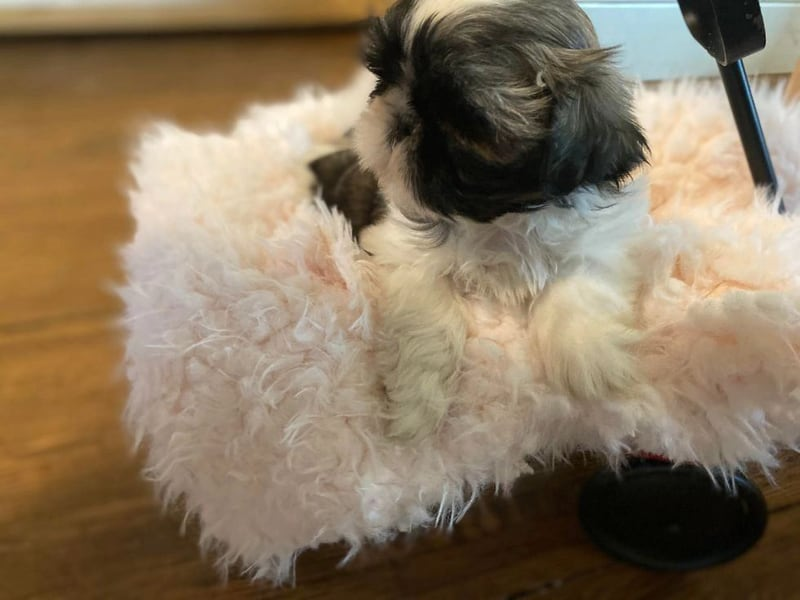

Experienced breeders
Choose a breeder with over twenty years experience. We are dedicated to our Shih Tzu's health and happiness.
Niota, Tennessee · 20+ years with the breed
AKC and CKC registered, DNA tested and backed by our health guarantee. Meet your puppy in person at our home in Niota, or on a free Zoom visit first.
Pickup in person only in Niota · we never ship

A letter from
Shannon ShermanOur home
Choose a breeder with over twenty years experience. We are dedicated to our Shih Tzu's health and happiness.
All of our Shih Tzu's are AKC and CKC registered. Our Shih Tzu's are DNA tested, and all puppies come with a health guarantee. Choose us, and choose peace of mind.
Shih Tzu's are a companion breed, and typically make life long bonds with their owner. Make a life long best friend, and adopt a puppy today.

A letter from
Shannon Sherman
First off I want to say hello, and welcome you all to my website. We have taken the time to rebuild our website to make the customer experience the best one we could provide. We value your opinion and thoughts, and strive to provide excellent customer service.
I am so excited to announce we now can do free puppy viewing appointments online using Zoom, or you can make an appointment to visit us in person. Visit and meet the puppies, put down a deposit to hold your puppy, then when the puppy is old enough to go home you pick up in person and pay the remaining balance. Call or book a visit to ask about a visit, a Zoom viewing, or a deposit.
A few years back we asked previous customers to submit pictures of their beautiful Shih Tzu Puppies that they have purchased from me. We love seeing the fur-babies, and all the pictures you guys send. If you send your picture to us you could have a chance for your fur baby to be featured here on our website.
Finally, if you have any questions at all you can always call me at 423-920-3750 and ask for Shannon Sherman, or email greenpea@live.com. Thank you for being so amazing, and making this hobby of mine the best part of everyday.
Come see us
We are in East Tennessee, near Athens, within a drive of Knoxville and Chattanooga. Families are welcome from anywhere in the United States. We would be delighted to welcome you. Visit us at 230 County Road 263, Niota, TN 37826, or begin with a free Zoom visit.
Visit and meet the puppies, put down a deposit to hold your puppy, then when the puppy is old enough to go home you pick up in person and pay the remaining balance.
We do not ship. Pickup is in Niota, TN.
Call, or book a visit, and set a time to meet the puppies in person. Free puppy viewing appointments are also available on Zoom.
Visit and meet the puppies, put down a deposit to hold your puppy, then when the puppy is old enough to go home you pick up in person and pay the remaining balance. The health guarantee is gone over in person at puppy pickup.
If a litter is not ready for a visit yet, you are welcome to ask about the wait list. Call or write, and we will be glad to talk with you.
Films
The puppies
A few photographs from our home. More are in the gallery.



